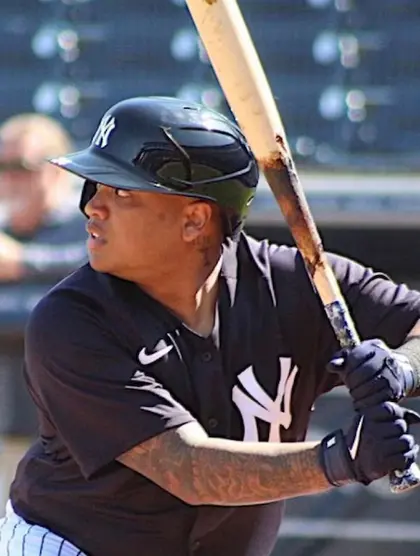

Willie Calhoun
Career Highlights & Facts
(Facts are AI-generated and may require verification)
- Selected in the 4th round of the amateur draft.
- Primary defensive roles include left field and designated hitter.
- Involved in a high-profile trade for a multi-time All-Star pitcher.
Would you like to find out more about Willie Calhoun?
Read Player Biography
Willie Calhoun
April 15, 2024
/
in
/
by
admin
This bio is not assigned. Want to write a SABR bio? Contact
bioproject@sabr.org
.
Full Name
Willie Shawn Lamont Calhoun
Born
November 4, 1994 at Vallejo, California (USA)
Stats
Baseball Reference
Retrosheet
Tags
None
Wikipedia Summary:
Willie Shawn Lamont Calhoun is an American professional baseball left fielder and designated hitter for the Charros de Jalisco of the Mexican League. He has previously played in Major League Baseball (MLB) for the Texas Rangers, San Francisco Giants, New York Yankees, and Los Angeles Angels.
Career Totals
| WAR | AB | H | HR | BA | R | RBI | SB | OBP | SLG | OPS | OPS+ |
|---|---|---|---|---|---|---|---|---|---|---|---|
| -2.2 | 1217 | 293 | 42 | .241 | 140 | 140 | 0 | .303 | .399 | .703 | 88 |
Statistics via Baseball-Reference.com
The Original Clue